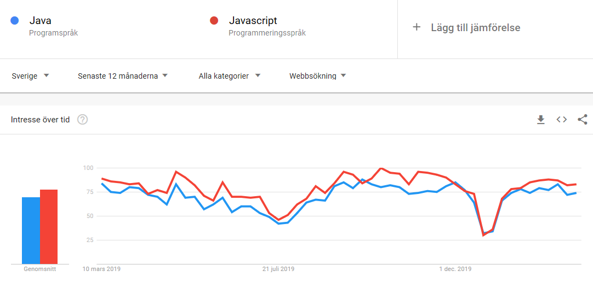
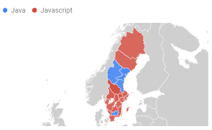
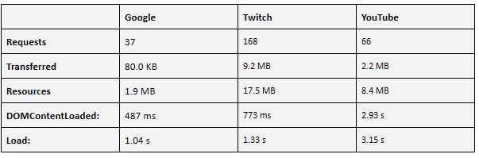
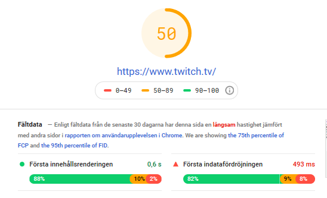
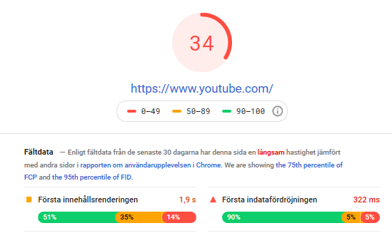
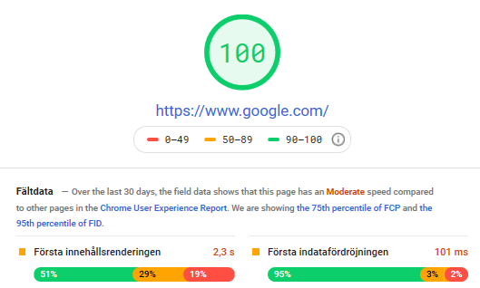
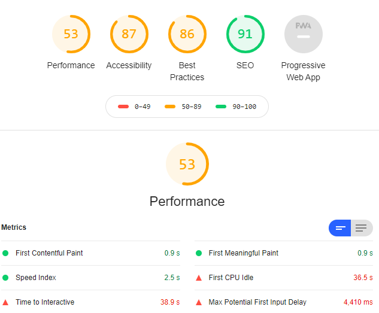
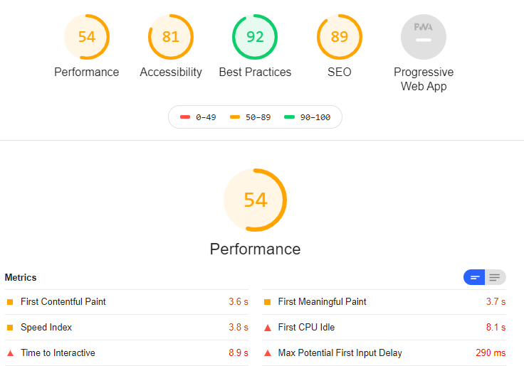
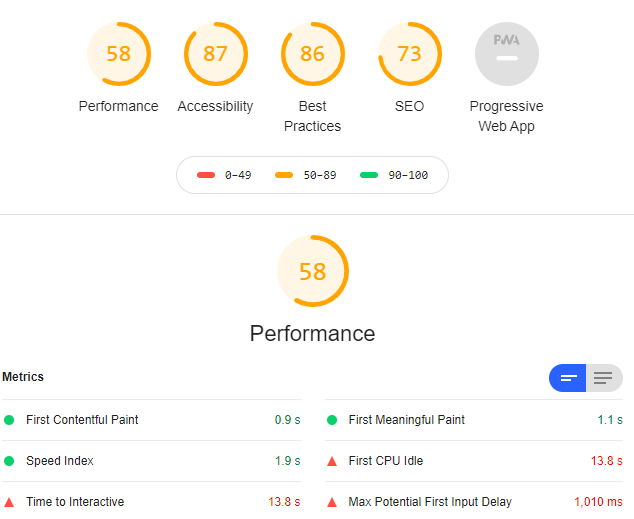

Reportpage from the course DA377B VT20 Software Development for the Web
S01
Did you before know about the techniques Git, GitHub, Markdown and/or GitHub Pages?
I did know about Github since we have used it a little bit in the other courses.
It’s good to learn how to push/commit etc from the command since we have used Github
desktop most of the time. It has been easier since we haven’t got that much knowledge
about how to use real Git.
Have you ever created websites before?
We did some in the Software Engineering 2 but only the basic parts so it will be a
great learning experience to learn more about how to create one.
Briefly explain your experience and knowledge of web application development.
We have had some courses before but I feel like it was quite little so I would say
that I'm a total beginner and I’m looking forward to learn more about it.
What is your TIL for this course section?
To learn more about how to use Github from the command prompt. how to Visual Studio Code
S02
Have you any previous experience of HTML, CSS and/or JavaScript?
No, we have not had any courses that was teaching us how to code in this languages.
We have done some CSS within projects but only very little.
Explain the role of HTML, CSS and JavaScript in web development.
HTML is a markup language which is the skeleton of the information on a web page.
CSS is controlling the web pages appearance and JavaScript stands for the programming
functionalities. HTML, CSS and JavaScript is the essentials for building a website.
Give a brief explanation of how the browser, the HTTP protocol and the web server interacts.
A browser communicates with a web server through HTTP protocol.
A browser makes a request to a web server to return a specific resource such as an image,
video or webpage. Depending on the authenticity of the request, a server then returns the
requested resource.
What is your TIL for this course section?
I have learned more about CSS HTML and JavaScript and how to make them integrate with each other.
S03
Do you have any previous experience of client side JavaScript?
No, I have never worked with client side javascript before or with JavaScpipt but I think
it's a fun language to work with.
Can you compare and relate the JavaScript language to any other language you know?
I have only worked with Java but I think JavaScpipt is similar in some ways. I find it
fun to work with.
Describe how you worked with the coding exercise, what grade do you aim for and how did
your code turn out to be?
I did it with the help of youtube videos and google to find css etc. I aim for grade 3.
What is your TIL for this course section?
To get more into javascript code and css. I think it is fun to add styling and its good
that it's possible to try it before adding to the code by using devtools in my browser.
S04
Tell me about your previous experience on node/npm or any equal programming tools.
I have tried node a little bit. Programming tools that I have used before is git, github,
MySql, bootstrap, Visual studios.
How do you feel about working with JavaScript, Node and Express?
I think it is fun once you get more knowledge about how to use it and integrate with the
different programs.
Explain how you did take on the coding assignment, did you have a plan and did it work?
It worked after some research and tutorials. I found some information on StackOverflow and
tried in the devtools before adding it to the project.
What grade did you aim for and was it a difficult level?
I aimed for grade 3 since it was quite a lot new information.
What is your TIL for this course section?
Today I learned how to work with express and Node and how to use them as a server instead of XAMPP.
S05
How do you feel about PHP as a programming language?
I think it's quite straight forward
Can you compare PHP to other languages you know?
I have only worked with Java and JavaScpipt so it was a bit different with example $ dollar
sign before variables.
Describe how you took on the coding exercise, what grade did you aim for and are you satisfied
with the result?
I aimed for grade 3 and I did all the topics for grade 3. I think it was quite straight forward
but I had some difficulties with the MySql connection to the database but once I got that solved
the rest worked out quite well.
What is your TIL for this course section?
I learned how to do some PHP coding and how to integrate php, JavaScpipt and Mysql into one
project.
S06
What is your own opinion on popularity of programming languages and what are your thoughts
of future popularity among programming languages?
Since I have not been programming before my education I have only got the feeling that Java
and C# seems to be a common programming language around workplaces. I think Java gives the
programmer more help and suggestions than what C# does. It’s important to find information
in how to solve an error if needed and I feel like Java is easier to find such information
and the program itself gives good ideas in how to solve the issue.
What will be your own choice for selecting future programming languages?
I would choose Java at first but that is only because it’s the language that I feel most comfortable
and since we have been using it a lot in school. Many websites and social platforms seems to be
developed in JavaScript and the more I get to code in it the more I like it.
Do your own investigation on https://trends.google.com to customize your own comparison
on programming languages (or frameworks) and elaborate on the results.
Due to the result in what people in Sweden are searching mostly for Java or JavaScript it is quite
close but JavaScript has always the leading position between those two. Based on the statistics northern
part of sweden and southern search more on JavaScript than the middle part.
 
If you were to recommend a language/framework/technology to your potential employer and your next
large project, what would it be and how would you “sell it”?
I would choose JavaScript since it seems easy to use and to integrate with other programming languages.
I would sell it by informing in how many big platforms that is using it today and that it is quite
easy to find information if one doesn’t know how to program in it.
What is your TIL for this course section?
To get more into what programming languages is the most popular ones around the globe and what type
of language developers are using it certain matters.
S07
Try to explain the platform .NET (C#, ASP.NET) to a skilled programmer, but newbie to this
Microsoft technology.
ASP.NET is a web application framework. It is developed by Microsoft and it makes developers allowed
to build dynamic websites with full features to integrate with languages like C# or VB.NET.
Elaborate by comparing .NET technologies with the other technologies we learned during the
course.
Comparing asp.net, node.js, php: ASP.NET is an open-source server-side web application
framework which allows the programmer to build dynamic web applications and web services.
Asp.net is highly security priority. PHP is a server-side scripting language designed for
web development. PHP is more efficient when building e-commerce websites and for managing
dynamic content. Php is less built-in features for security.ASP.NET is better suited for large
and medium-sized organization whereas PHP is better equipped to server start-up and small
sized organizations. Node.js is an open-source, cross-platform which let the developers use
JavaScript to write command line tools and for server-side scripting to produce dynamic webpage
content before the page is sent to the user’s web browser. Node.js is as secure as almost any
programming languages but it is more up to the development team to check their code and modules
for vulnerabilities.
Describe how you took on the coding exercise, what grade did you aim for and are you satisfied
with the result?
I aimed for grade 3 and I’m satisfied with the result since I have never been programming in
.Net or C#
What is your TIL for this course section?
I learned how to use .NET platform and to use C#. I have never been coding in C# before but
I think it went quite well.
S08
Websites to analyse:
I choose to work with Google, Twitch and YouTube. I chose to work with these three since twitch and
YouTube are quite similar since both have livestreams and recorded videos but google is a search engine.
I found these three interesting to analyse.
Devtools network tab:
PageSpeed
Twitch:
YouTube:
Google:
LightHouse
Twitch:
YouTube:
Google:
The test results shown as expected that youtube and twitch are more heavy programs for the computer
to work with. The recommendation for for a page load is under 3 seconds. To make performance better
it is required to move the website to a better host, use website caching, use less number of JavaScript
and CSS files.
Summarizing
Web performance is all about making websites fast or so that the user can interact with it quickly.
If there is an issue with loading the page the user should get feedback if the website takes time to
load and why. The website should be as smooth as possible so that the user is enjoying using it.
Web performance is about reducing overall load time which is caused by latency how big the files
are and how many files. The best strategy for reducing the load time is to make the files as small
as possible and reduce the number of HTTP requests if possible.
The website should be usable as soon as possible so that the user can use it really quick. The website
can continue to load any other assets in the background but the user should be able to get on with
primary tasks. It should be smooth in all aspects such as scrolling, clicking buttons and animations
should run smoothly.The website should be fast in loading for best possible user experience.
Performance measurements is involving measure the actual speed of the application, optimizing
where possible and then monitoring the performance. Many features impact the performance in
websites including latency, number of DOM nodes, application size, resource requests, JavaScript
performance, CPU load etc. It is important to minimize the loading and response time, and making
the experience as fast, available and interactive as possible so that the user has the best
experience possible.
What is your TIL for this course section?
I learned how to use Devtools network tab, PageSpeed Insights and Lighthouse and how to find the
performance.
S09
1. Elaborate on a few (3-5) different security issues or concerns, from your own experience,
related to web application security and relate them to the OWASP top ten.
Sensitive Data Exposure
When creating a website it is important to think of all the security issues that can occur
when users are interacting with the website. Users information or personal data should
not be available for other users and should be well protected for potential hackers. This
is the concern of “Sensitive Data Exposure” in the OWASP.
Broken Access Control
Websites is also very vulnerable to access control system that controls the information
functionality such as authorization and perform tasks as they were privileged users such
as administrators. This is a big concern when building a website since attackers can get
access to the websites administrating section. This issue is referred to the “Broken
Access Control” in OWASP. Many services uses authorization tokens when users log
in to ensure that the user say who they are and in this way it is possible to save
credentials so that the user does not constantly have to login every time they enter
the website.
Logging and monitoring
Many websites are not taking enough steps in ensuring that there is no detect data
breaches. “Insufficient logging and monitoring” from OWASP is what gives the attackers
the opportunity to hack the website. Developers must be concerned when implementing
logging, monitoring and incident response plans to make sure that the website is aware
if an attack happen.
The essential guidelines to follow to create secure web applications.
To create a trustful and reliable website for both users and administrators the developers
must think of all the possible threats when creating the website. The developers must
prioritize vulnerabilities and minimize the risks of authorization gets in the wrong hands.
Users should feel protected in order to wanting to use the website so that their personal
information never leaks or a hacker gets access to it.
To avoid the two first concerns is it important that the developing team has built a website
that indicate if an incident occurs or a possible threat to the website.
What is your TIL for this course section?
I learn more about the concerns in security for web applications and all many possible
threats when creating a website. It is important as a developer to create a website as
secure as possible and have a “incident response plan” if an attack occurs.